Тема 1.2. Три вида представления логической функции.
План:
1. Переход от логической формулы к логической схеме.
2. Переход от логической схемы к логической формуле.
3. Переход от логической формулы к таблице истинности.
4. Переход от таблицы истинности к логической формуле.
5. Тождественность функций.
Существует три вида представления логической функции:
Логическая формула (ЛФ).
Логическая схема (ЛС).
Таблица истинности (ТИ).
Переход от логической формулы к логической схеме.
Переход от логической формулы к логической схеме происходит по последующим шагам:
1.В логической формуле находим короткие инверсии и заменяем их в схеме элементом «НЕ» (инверсия).
2.В формуле находим конъюнкцию (логическое умножение) и заменяем в схеме элементом «И».
Сколько в конъюнкции множителей, столько и входов в элементе «И».
3.Если есть длинная инверсия над конъюнкцией, то рисуем кружочек на выходе у элемента «И».
4.Ищем в формуле дизъюнкцию и заменяем в схеме элементом «ИЛИ». Сколько слагаемых в дизъюнкции, столько и входов у этого элемента «ИЛИ». Если над дизъюнкцией есть длинная инверсия, то ставим кружочек на выходе этого элемента «ИЛИ»
5.Одинаковые элементы рисуются друг под другом.
Пример: по логической формуле построить логическую схему.
F=((X1) ̅&(X3) ̅ ) ̅VX1&(X2) ̅&X3VX1&X2
 F=(X1&X2) ̅V (X2) ̅&(X3) ̅
F=(X1&X2) ̅V (X2) ̅&(X3) ̅
 F=(X1) ̅&X2VX2VX1&(X2) ̅
F=(X1) ̅&X2VX2VX1&(X2) ̅
 4. Переход от таблицы истинности к логической формуле.
Переход от таблицы истинности к логической формуле. Существует три варианта написания логической формулы:
1. СДНФ- совершенная дизъюнктивная нормальная форма.
2. СКНФ-совершенная конъюнктивная нормальная форма.
3. СПНФ-совершенная полиномиальная нормальная форма.
СДНФ:
Она стремится к единице. Чтобы получить СДНФ выполняем следующие действия:
1.В таблице истинности помечаем все строки, в которых функция равна единице. Сколько таких строк, столько слагаемых (колбасок) будет в формуле.
2.Каждое слагаемое будет представлять конъюнкцию всех аргументов.
3.Так как СДНФ стремится к единице, то необходимо избавиться от нулей, с помощью инверсии. Если в данной строке таблицы истинности аргумент равен нулю, то в формуле над этим аргументом ставим инверсию, а если равен единице, то не ставим.
4. Переход от таблицы истинности к логической формуле.
Переход от таблицы истинности к логической формуле. Существует три варианта написания логической формулы:
1. СДНФ- совершенная дизъюнктивная нормальная форма.
2. СКНФ-совершенная конъюнктивная нормальная форма.
3. СПНФ-совершенная полиномиальная нормальная форма.
СДНФ:
Она стремится к единице. Чтобы получить СДНФ выполняем следующие действия:
1.В таблице истинности помечаем все строки, в которых функция равна единице. Сколько таких строк, столько слагаемых (колбасок) будет в формуле.
2.Каждое слагаемое будет представлять конъюнкцию всех аргументов.
3.Так как СДНФ стремится к единице, то необходимо избавиться от нулей, с помощью инверсии. Если в данной строке таблицы истинности аргумент равен нулю, то в формуле над этим аргументом ставим инверсию, а если равен единице, то не ставим.

 F1=(X1V(X2) ̅VX3)&(X1V(X2) ̅V (X3) ̅)&((X1) ̅VX2VX3)&((X1) ̅VX2V(X3) ̅)
F2=(X1VX2VX3)&(X1VX2V(X3) ̅)&(X1V(X2) ̅V(X3) ̅)&((X1) ̅V(X2) ̅VX3)&((X1) ̅V(X2) ̅V(X3) ̅)
F3=(X1VX2V(X3) ̅)&(X1V(X2) ̅V(X3) ̅)&((X1) ̅VX2V(X3) ̅)&((X1) ̅V(X2) ̅V(X3) ̅)
F4=(X1VX2VX3)&(X1V(X2) ̅VX3)&(X1V(X2) ̅V(X3) ̅)&((X1) ̅VX2VX3)&((X1) ̅V(X2) ̅VX3)&((X1) ̅V(X2) ̅V(X3) ̅)
Тождественность функций.
Две функции являются тождественными, если их таблица истинности совпадают.
Сравнить две функции на тождественность.
F1=(X1) ̅&(X2) ̅&(X3) ̅V(X1) ̅&(X2) ̅&X3
F2=(X1) ̅&(X2) ̅
F1=0 ̅&0 ̅&0 ̅V0 ̅&0 ̅&0=1V0=1
F2=0 ̅&0 ̅=1&1=1
F1=0 ̅&0 ̅&1 ̅V0 ̅&0 ̅&1=0V1=1
F2=0 ̅&0 ̅=1&1=1
F1=0 ̅&1 ̅&0 ̅V0 ̅&1 ̅&0=0V0=0
F2=0 ̅&1 ̅=1&0=0
F1=0 ̅&1 ̅&1 ̅V0 ̅&1 ̅&1=0V0=0
F2=0 ̅&1 ̅=1&0=0
F1=1 ̅&0 ̅&0 ̅V1 ̅&0 ̅&0=0V0=0
F2=1 ̅&0 ̅=0&1=0
F1=1 ̅&0 ̅&1 ̅V1 ̅&0 ̅&1=0V0=0
F2=1 ̅&0 ̅=0&1=0
F1=1 ̅&1 ̅&0 ̅V1 ̅&1 ̅&0=0V0=0
F2=1 ̅&1 ̅=0&0=0
F1=1 ̅&1 ̅&1 ̅V1 ̅&1 ̅&1=0V0=0
F2=1 ̅&1 ̅=0&0=0
F1=(X1V(X2) ̅VX3)&(X1V(X2) ̅V (X3) ̅)&((X1) ̅VX2VX3)&((X1) ̅VX2V(X3) ̅)
F2=(X1VX2VX3)&(X1VX2V(X3) ̅)&(X1V(X2) ̅V(X3) ̅)&((X1) ̅V(X2) ̅VX3)&((X1) ̅V(X2) ̅V(X3) ̅)
F3=(X1VX2V(X3) ̅)&(X1V(X2) ̅V(X3) ̅)&((X1) ̅VX2V(X3) ̅)&((X1) ̅V(X2) ̅V(X3) ̅)
F4=(X1VX2VX3)&(X1V(X2) ̅VX3)&(X1V(X2) ̅V(X3) ̅)&((X1) ̅VX2VX3)&((X1) ̅V(X2) ̅VX3)&((X1) ̅V(X2) ̅V(X3) ̅)
Тождественность функций.
Две функции являются тождественными, если их таблица истинности совпадают.
Сравнить две функции на тождественность.
F1=(X1) ̅&(X2) ̅&(X3) ̅V(X1) ̅&(X2) ̅&X3
F2=(X1) ̅&(X2) ̅
F1=0 ̅&0 ̅&0 ̅V0 ̅&0 ̅&0=1V0=1
F2=0 ̅&0 ̅=1&1=1
F1=0 ̅&0 ̅&1 ̅V0 ̅&0 ̅&1=0V1=1
F2=0 ̅&0 ̅=1&1=1
F1=0 ̅&1 ̅&0 ̅V0 ̅&1 ̅&0=0V0=0
F2=0 ̅&1 ̅=1&0=0
F1=0 ̅&1 ̅&1 ̅V0 ̅&1 ̅&1=0V0=0
F2=0 ̅&1 ̅=1&0=0
F1=1 ̅&0 ̅&0 ̅V1 ̅&0 ̅&0=0V0=0
F2=1 ̅&0 ̅=0&1=0
F1=1 ̅&0 ̅&1 ̅V1 ̅&0 ̅&1=0V0=0
F2=1 ̅&0 ̅=0&1=0
F1=1 ̅&1 ̅&0 ̅V1 ̅&1 ̅&0=0V0=0
F2=1 ̅&1 ̅=0&0=0
F1=1 ̅&1 ̅&1 ̅V1 ̅&1 ̅&1=0V0=0
F2=1 ̅&1 ̅=0&0=0
 то Так как таблицы истинности не совпали, то функции F3 и F4 не тождественны
Тема 1.3 Формулы и законы алгебры логики.
Эти формулы и законы предназначены для минимизации логических формул.
Переместительный закон:
X1VX2=X2VX1
X1&X2=X2&X1
Сочетательный закон:
X1V(X2VX3)=(X1VX2)VX3
X1&(X2&X3)=(X1&X2)&X3
Распределительный закон:
(X1VX2)&X3=(X1&X3)V(X2&X3)
(X1&X2)VX3=(X1VX3)&(X2VX3)
Закон инверсии:
(X1VX2) ̅=(X1) ̅&(X2) ̅
(X1&X2) ̅=(X1) ̅V(X2) ̅
Соотношения:
X1 ⊕X2=(X1~X2) ̅= ((X1) ̅V(X2) ̅)&(X1VX2)
X1 ~X2=(X1⊕X2) ̅=((X1) ̅&(X2) ̅)V(X1VX2)
~ - Эквивалентность
Формулы склеивания:
X1&X2VX1&(X2) ̅=X1
(X1VX2)&(X1V(X2) ̅)=X1
Формулы поглощения:
X1&X2VX1=X1 (X1) ̅&X2VX1=X1VX2
X1&(X2VX1)=X1 X1&(X2V(X1) ̅)=X1&X2
X&X=X X&X&X=X X&X ̅=0
X&X=X XVXVX=X XVX ̅=1
X&0=0 X ̿=X XV0=X
X&1=X XV1=1
F1=X1&X2&X3VX1&X3VX1&X2=X1&(X2&X3VX3)VX1&X2=X1&X3VX1&X2=X1&(X3VX2)
Чтобы проверить правильность минимизации необходимо составить таблицу истинности для исходной формулы и конечной.
Если таблицы истинности совпали, то минимизация выполнена верно.
Fнач=0&0&0V0&0V0&0=0V0V0=0 Fкон=0&0V0=0
Fнач=0&0&1V0&1V0&0=0V0V0=0 Fкон=0&1V0=0
Fнач=0&1&0V0&0V0&1=0V0V0=0 Fкон=0&0V1=0
Fнач=0&1&1V0&1V0&1=0V0V0=0 Fкон=0&1V1=0
Fнач=1&0&0V1&0V1&0=0V0V0=0 Fкон=1&0V0=0
Fнач=1&0&1V1&1V1&0=0V1V0=1 Fкон=1&1V0=1
Fнач=1&1&0V1&0V1&1=0V0V1=1 Fкон=1&0V1=1
Fнач=1&1&1V1&1V1&1=1V1V1=1 Fкон=1&1V1=1
то Так как таблицы истинности не совпали, то функции F3 и F4 не тождественны
Тема 1.3 Формулы и законы алгебры логики.
Эти формулы и законы предназначены для минимизации логических формул.
Переместительный закон:
X1VX2=X2VX1
X1&X2=X2&X1
Сочетательный закон:
X1V(X2VX3)=(X1VX2)VX3
X1&(X2&X3)=(X1&X2)&X3
Распределительный закон:
(X1VX2)&X3=(X1&X3)V(X2&X3)
(X1&X2)VX3=(X1VX3)&(X2VX3)
Закон инверсии:
(X1VX2) ̅=(X1) ̅&(X2) ̅
(X1&X2) ̅=(X1) ̅V(X2) ̅
Соотношения:
X1 ⊕X2=(X1~X2) ̅= ((X1) ̅V(X2) ̅)&(X1VX2)
X1 ~X2=(X1⊕X2) ̅=((X1) ̅&(X2) ̅)V(X1VX2)
~ - Эквивалентность
Формулы склеивания:
X1&X2VX1&(X2) ̅=X1
(X1VX2)&(X1V(X2) ̅)=X1
Формулы поглощения:
X1&X2VX1=X1 (X1) ̅&X2VX1=X1VX2
X1&(X2VX1)=X1 X1&(X2V(X1) ̅)=X1&X2
X&X=X X&X&X=X X&X ̅=0
X&X=X XVXVX=X XVX ̅=1
X&0=0 X ̿=X XV0=X
X&1=X XV1=1
F1=X1&X2&X3VX1&X3VX1&X2=X1&(X2&X3VX3)VX1&X2=X1&X3VX1&X2=X1&(X3VX2)
Чтобы проверить правильность минимизации необходимо составить таблицу истинности для исходной формулы и конечной.
Если таблицы истинности совпали, то минимизация выполнена верно.
Fнач=0&0&0V0&0V0&0=0V0V0=0 Fкон=0&0V0=0
Fнач=0&0&1V0&1V0&0=0V0V0=0 Fкон=0&1V0=0
Fнач=0&1&0V0&0V0&1=0V0V0=0 Fкон=0&0V1=0
Fнач=0&1&1V0&1V0&1=0V0V0=0 Fкон=0&1V1=0
Fнач=1&0&0V1&0V1&0=0V0V0=0 Fкон=1&0V0=0
Fнач=1&0&1V1&1V1&0=0V1V0=1 Fкон=1&1V0=1
Fнач=1&1&0V1&0V1&1=0V0V1=1 Fкон=1&0V1=1
Fнач=1&1&1V1&1V1&1=1V1V1=1 Fкон=1&1V1=1
 Так как таблицы истинности совпали, то минимизация верна.
Чтобы определить целесообразность минимизации необходимо построить схемы для исходной формулы и для конечной. Если схема конечная меньше начальной (исходной), то минимизация целесообразна.
F1=X1&X2&X3VX1&X3VX1&X2
Минимизация целесообразна, так как начальная логическая схема больше конечной логической схемы.
F2=((X1) ̅&(X2) ̅ ) ̅VX1&X3=(X1VX2) ̿VX1&X3=X1VX2VX1&X3=X1VX2VX1&X3=X2V(X1&X3VX1) =X2VX1
Так как таблицы истинности совпали, то минимизация верна.
Чтобы определить целесообразность минимизации необходимо построить схемы для исходной формулы и для конечной. Если схема конечная меньше начальной (исходной), то минимизация целесообразна.
F1=X1&X2&X3VX1&X3VX1&X2
Минимизация целесообразна, так как начальная логическая схема больше конечной логической схемы.
F2=((X1) ̅&(X2) ̅ ) ̅VX1&X3=(X1VX2) ̿VX1&X3=X1VX2VX1&X3=X1VX2VX1&X3=X2V(X1&X3VX1) =X2VX1
 Минимизация целесообразна, так как конечная логическая схема меньше начальной логической схемы.
F3=(((X1) ̅&(X2) ̅ ) ̅VX1&X3VX3) ̿=((X1) ̅&(X2) ̅ ) ̅VX1&X3VX3=(X1VX2) ̿VX1&X3VX3=X1VX2V(X1&X3VX3)=X1VX2VX3
Минимизация целесообразна, так как конечная логическая схема меньше начальной логической схемы.
F3=(((X1) ̅&(X2) ̅ ) ̅VX1&X3VX3) ̿=((X1) ̅&(X2) ̅ ) ̅VX1&X3VX3=(X1VX2) ̿VX1&X3VX3=X1VX2V(X1&X3VX3)=X1VX2VX3
 Минимизация верна, так как таблицы истинности совпали.
Минимизация целесообразна, так как логическая схема начальной формулы больше логической схемы конечной формулы.
Тема 1.4. Минимизация логической формулы методом Карно-Вейча.
1. Минимизация логической формулы от трех аргументов методом Карно-Вейча.
2. Минимизация логической формулы от четырех аргументов методом Карно-Вейча.
1. Минимизация логической формулы от трех аргументов методом Карно-Вейча
Минимизация осуществляется по следующим шагам:
1. Заполняется таблица истинности.
2. По таблице истинности записываем совершенную дизъюнктивную нормальную форму(СДНФ)
3.Используя совершенную дизъюнктивную нормальную форму(СДНФ) заполняем карту Карно (сколько слагаемых в СДНФ, столько единиц будет в карте Карно) по определенным адресам.
4. В картах Карно осуществляем склейку (объединение единиц в группы)
Правила склейки:
За минимальное число склеек необходимо склеить все единицы (без пустых клеточек или ноликов).
Чем больше в склейке клеток, тем лучше.
Объединять можно по одной, две, четыре, восемь, шестнадцать и так далее (2n).
Объединять клетки можно по горизонтали, вертикали, квадратом, прямоугольником, по краям, по углам, но не по диагонали.
Склейки могут пересекаться.
5. Записываем результирующую минимизированную формулу по правилам:
Сколько склеек в карте Карно, столько и слагаемых в формуле.
Каждая склейка по очереди проецируется на каждый аргумент.
Если проекция склейки захватывает область как прямого аргумента, так и инверсного, (одного и того же), то они взаимно уничтожаются и в формулу не записываются.
Если проекция склейки захватывает область:
Прямого аргумента, то он так и записывается без инверсии в формулу.
Инверсного аргумента, то он записывается с инверсией в формулу.
Каждый аргумент является сомножителем в колбаске.
6. По минимизированной формуле строим схему результата и проверяем минимизацию на правильность и целесообразность.
Пример 1:
F1=(X1) ̅&X2&(X3) ̅V(X1) ̅&X2&X3VX1&X2&(X3) ̅VX1&X2&X3
Минимизация верна, так как таблицы истинности совпали.
Минимизация целесообразна, так как логическая схема начальной формулы больше логической схемы конечной формулы.
Тема 1.4. Минимизация логической формулы методом Карно-Вейча.
1. Минимизация логической формулы от трех аргументов методом Карно-Вейча.
2. Минимизация логической формулы от четырех аргументов методом Карно-Вейча.
1. Минимизация логической формулы от трех аргументов методом Карно-Вейча
Минимизация осуществляется по следующим шагам:
1. Заполняется таблица истинности.
2. По таблице истинности записываем совершенную дизъюнктивную нормальную форму(СДНФ)
3.Используя совершенную дизъюнктивную нормальную форму(СДНФ) заполняем карту Карно (сколько слагаемых в СДНФ, столько единиц будет в карте Карно) по определенным адресам.
4. В картах Карно осуществляем склейку (объединение единиц в группы)
Правила склейки:
За минимальное число склеек необходимо склеить все единицы (без пустых клеточек или ноликов).
Чем больше в склейке клеток, тем лучше.
Объединять можно по одной, две, четыре, восемь, шестнадцать и так далее (2n).
Объединять клетки можно по горизонтали, вертикали, квадратом, прямоугольником, по краям, по углам, но не по диагонали.
Склейки могут пересекаться.
5. Записываем результирующую минимизированную формулу по правилам:
Сколько склеек в карте Карно, столько и слагаемых в формуле.
Каждая склейка по очереди проецируется на каждый аргумент.
Если проекция склейки захватывает область как прямого аргумента, так и инверсного, (одного и того же), то они взаимно уничтожаются и в формулу не записываются.
Если проекция склейки захватывает область:
Прямого аргумента, то он так и записывается без инверсии в формулу.
Инверсного аргумента, то он записывается с инверсией в формулу.
Каждый аргумент является сомножителем в колбаске.
6. По минимизированной формуле строим схему результата и проверяем минимизацию на правильность и целесообразность.
Пример 1:
F1=(X1) ̅&X2&(X3) ̅V(X1) ̅&X2&X3VX1&X2&(X3) ̅VX1&X2&X3
 В карте Карно для трех аргументов восемь клеток, для двух аргументов четыре клетки, для четырех аргументов шестнадцать клеток.
В карте Карно для трех аргументов восемь клеток, для двух аргументов четыре клетки, для четырех аргументов шестнадцать клеток.
 Так как таблицы истинности совпали, то минимизация верна.
Так как таблицы истинности совпали, то минимизация верна.
 Минимизация целесообразна, так как конечная схема меньше начальной.
2. Минимизация логической формулы от четырех аргументов методом Карно-Вейча.
Минимизация целесообразна, так как конечная схема меньше начальной.
2. Минимизация логической формулы от четырех аргументов методом Карно-Вейча.
 А\В:= {Х | XA&XB}
А:= {0,1,2,3}
В:= {2,3,4}
А\В:= {0,1}
А\В:= {Х | XA&XB}
А:= {0,1,2,3}
В:= {2,3,4}
А\В:= {0,1}
 B\A:= {Х | XA&XB}
А:= {0,1,2,3}
В:= {2,3,4}
B\A:= {4}
Дополнение А ̅
Дополнением множества А называется множество, состоящее из элементов, не принадлежащих А.
B\A:= {Х | XA&XB}
А:= {0,1,2,3}
В:= {2,3,4}
B\A:= {4}
Дополнение А ̅
Дополнением множества А называется множество, состоящее из элементов, не принадлежащих А.
 А ̅:= { Х | XA}
А ̅:= { 0,1,2,3}
B ̅:= { 2,3,4}
А ̅:= {-…,-1, 4…+}
В ̅:= { Х | XВ}
В ̅:= {-…, 1, 5…+}
Пример:
1. Найти объединение, пересечение, две разности и два дополнения следующих множеств.
А:= {1,2,4,5,7,8}
В:= {2,4,6,8,10}
АВ:={1,2,4,5,6,7,8,10}
АВ:= {2,4,8}
А\В:= {1,5,7}
B\A:= {6,10}
А ̅:= {-…0,3,6,9…+}
В ̅:= {-…1,3,5,7,9,11…+}
2. Найти объединение, пересечение, две разности и два дополнения следующих множеств.
А:= {-2,4,12,20}
В:= {0,7,11,17}
АВ:={-2,0,4,7,11,12,17,20}
АВ:=
А\В:= {-2,4,12,20}
B\A:= {0,7,11,17}
А ̅:= {-…-3,-1,0,1,2,3,5,6,7,8,9,10,11,13,14,15,16,17,18,19,21…+}
В ̅:= {-…-1,1,2,3,4,5,6,8,9,10,12,13,14,15,16,18…+}
3. Найти объединение, пересечение, две разности и два дополнения следующих множеств.
А:= {а,б,в,г,д}
В:= {а,г,с,т,у}
АВ:={а,б,в,г,д,с,т,у}
АВ:= {а,г}
А\В:= {б,в,д}
B\A:= {с,т,у}
А ̅:= {е,ё,…я}
В ̅:= {б,в,д,…р,ф,…я}
4. Найти объединение, пересечение, две разности и два дополнения следующих множеств
Множество А:= {р,о,м,а,н}
В:= {ь,ы,ъ,э,ю,я}
АВ:={р,о,м,а,н,ь,ы,ъ,э,ю,я}
АВ:=
А\В:= {р,о,м,а,н}
B\A:= {ь,ы,ъ,э,ю,я}
А ̅:= {б,…л,п,с…я}
В ̅:= {а,…щ}
5. Найти объединение, пересечение, две разности и два дополнения следующих множеств
А:= {1,б,4,г,8,с,12,ю}
В:= {1,2,3,4,ж,и,к,г}
АВ:={1,2,3,4,8,12,б,с,ю,ж,и,к,г}
АВ:= {1,4}
А\В:= {б,8,с,12,ю}
B\A:= {2,3,ж,и,к}
А ̅:= {-…0,2,3,5,6,7,9,10,11,13…+,а,в,д,…р,т…э,я}
В ̅:= {-…0,5,…+,а,б,в,д,е,ё,з,й,л…я}
Тема 1. Графы. Общие сведения.
План:
Основные определения и понятия.
Понятия инцидентности, смежности и степени.
Маршруты, цепи и циклы.
Частные случаи. Связность внутри графа и расстояние.
Матрица инцидентности.
Матрица смежности.
Основные определения и понятия.
Графом G(V,X) называется совокупность двух множеств – непустого множества вершин V и множества ребер X (неупорядоченных пар различных элементов множества V). Ребро связывает две вершины. Это так называемый неориентированный граф G.
Рис. 1. Неориентированный граф
G=(V, X), V={v1, v2, v3, v4, v5}, X={x1={v1,v2}, x2={v2,v3}, x3={v2,v4}, x4={v3,v4}}.
А ̅:= { Х | XA}
А ̅:= { 0,1,2,3}
B ̅:= { 2,3,4}
А ̅:= {-…,-1, 4…+}
В ̅:= { Х | XВ}
В ̅:= {-…, 1, 5…+}
Пример:
1. Найти объединение, пересечение, две разности и два дополнения следующих множеств.
А:= {1,2,4,5,7,8}
В:= {2,4,6,8,10}
АВ:={1,2,4,5,6,7,8,10}
АВ:= {2,4,8}
А\В:= {1,5,7}
B\A:= {6,10}
А ̅:= {-…0,3,6,9…+}
В ̅:= {-…1,3,5,7,9,11…+}
2. Найти объединение, пересечение, две разности и два дополнения следующих множеств.
А:= {-2,4,12,20}
В:= {0,7,11,17}
АВ:={-2,0,4,7,11,12,17,20}
АВ:=
А\В:= {-2,4,12,20}
B\A:= {0,7,11,17}
А ̅:= {-…-3,-1,0,1,2,3,5,6,7,8,9,10,11,13,14,15,16,17,18,19,21…+}
В ̅:= {-…-1,1,2,3,4,5,6,8,9,10,12,13,14,15,16,18…+}
3. Найти объединение, пересечение, две разности и два дополнения следующих множеств.
А:= {а,б,в,г,д}
В:= {а,г,с,т,у}
АВ:={а,б,в,г,д,с,т,у}
АВ:= {а,г}
А\В:= {б,в,д}
B\A:= {с,т,у}
А ̅:= {е,ё,…я}
В ̅:= {б,в,д,…р,ф,…я}
4. Найти объединение, пересечение, две разности и два дополнения следующих множеств
Множество А:= {р,о,м,а,н}
В:= {ь,ы,ъ,э,ю,я}
АВ:={р,о,м,а,н,ь,ы,ъ,э,ю,я}
АВ:=
А\В:= {р,о,м,а,н}
B\A:= {ь,ы,ъ,э,ю,я}
А ̅:= {б,…л,п,с…я}
В ̅:= {а,…щ}
5. Найти объединение, пересечение, две разности и два дополнения следующих множеств
А:= {1,б,4,г,8,с,12,ю}
В:= {1,2,3,4,ж,и,к,г}
АВ:={1,2,3,4,8,12,б,с,ю,ж,и,к,г}
АВ:= {1,4}
А\В:= {б,8,с,12,ю}
B\A:= {2,3,ж,и,к}
А ̅:= {-…0,2,3,5,6,7,9,10,11,13…+,а,в,д,…р,т…э,я}
В ̅:= {-…0,5,…+,а,б,в,д,е,ё,з,й,л…я}
Тема 1. Графы. Общие сведения.
План:
Основные определения и понятия.
Понятия инцидентности, смежности и степени.
Маршруты, цепи и циклы.
Частные случаи. Связность внутри графа и расстояние.
Матрица инцидентности.
Матрица смежности.
Основные определения и понятия.
Графом G(V,X) называется совокупность двух множеств – непустого множества вершин V и множества ребер X (неупорядоченных пар различных элементов множества V). Ребро связывает две вершины. Это так называемый неориентированный граф G.
Рис. 1. Неориентированный граф
G=(V, X), V={v1, v2, v3, v4, v5}, X={x1={v1,v2}, x2={v2,v3}, x3={v2,v4}, x4={v3,v4}}.
 Если элементами множества X являются упорядоченные пары (имеют направление), то граф называется ориентированным D графом (орграфом).
Рис. 2.Ориентированный граф
D=(V, X), V={v1, v2, v3, v4}, X={x1=(v1,v2), x2=(v1,v2), x3=(v2,v2), x4=(v2,v3)}.
Если элементами множества X являются упорядоченные пары (имеют направление), то граф называется ориентированным D графом (орграфом).
Рис. 2.Ориентированный граф
D=(V, X), V={v1, v2, v3, v4}, X={x1=(v1,v2), x2=(v1,v2), x3=(v2,v2), x4=(v2,v3)}.
 У этого графа есть одинаковые ребра x1=(v1,v2), x2=(v1,v2). Такие ребра называются кратными.
Граф, имеющий кратные ребра называется мультиграфом.
Ребро x3 называется петлей. Если граф имеет петлю (на рис. x3={v2,v2}) то граф называется псевдографом.
2. Понятия инцидентности, смежности и степени.
Если v и w – вершины, а x = (v,w) – соединяющее их ребро, то вершина v и ребро x инцидентны, как и вершина w и ребро x.
x = (v,w) vx wx.
Вершины v, w называются смежными, если они инцидентны одному и тому же ребру.
(v,w)x.
Ребра называются смежными, если они имеют общую вершину.
Множество вершин, смежных с вершиной v, называется множеством смежности вершины v и обозначается Г(v).
Степенью вершины v графа G называется число ребер (v) графа G, инцидентных вершине v.
Например, на рис.1 вершина v1 имеет степень 1, вершина v2 имеет степень 3, вершина v3 имеет степень 2, вершина v4 имеет степень 2, вершина v5 имеет степень 0.
Вершина графа, имеющая степень 0 (не инцидентная ни одному из ребер) называется изолированной, а степень 1 (инцидентная одному ребру) – висячей.
3. Маршруты, цепи и циклы.
Маршрутом называется чередующаяся последовательность вершин и ребер графа:
v1,x1,v2,x2,v3,...,xk,vk+1
в которой любые два соседних элемента инцидентны.
Для обычного неориентированного графа достаточно указать в маршруте только последовательность ребер или вершин, т.к. там нет петель.
Если v1 и vk+1 совпадают, то маршрут замкнут. Иначе маршрут называется открытым.
Цепью называется маршрут, в котором все ребра различны. Если в цепи также различны и вершины, то такая цепь называется простой.
Замкнутая цепь, называется циклом. Цикл, в котором все вершины, кроме первой и последней, попарно различны, называется простым циклом. Граф без циклов называется ациклическим.
Пример:
У этого графа есть одинаковые ребра x1=(v1,v2), x2=(v1,v2). Такие ребра называются кратными.
Граф, имеющий кратные ребра называется мультиграфом.
Ребро x3 называется петлей. Если граф имеет петлю (на рис. x3={v2,v2}) то граф называется псевдографом.
2. Понятия инцидентности, смежности и степени.
Если v и w – вершины, а x = (v,w) – соединяющее их ребро, то вершина v и ребро x инцидентны, как и вершина w и ребро x.
x = (v,w) vx wx.
Вершины v, w называются смежными, если они инцидентны одному и тому же ребру.
(v,w)x.
Ребра называются смежными, если они имеют общую вершину.
Множество вершин, смежных с вершиной v, называется множеством смежности вершины v и обозначается Г(v).
Степенью вершины v графа G называется число ребер (v) графа G, инцидентных вершине v.
Например, на рис.1 вершина v1 имеет степень 1, вершина v2 имеет степень 3, вершина v3 имеет степень 2, вершина v4 имеет степень 2, вершина v5 имеет степень 0.
Вершина графа, имеющая степень 0 (не инцидентная ни одному из ребер) называется изолированной, а степень 1 (инцидентная одному ребру) – висячей.
3. Маршруты, цепи и циклы.
Маршрутом называется чередующаяся последовательность вершин и ребер графа:
v1,x1,v2,x2,v3,...,xk,vk+1
в которой любые два соседних элемента инцидентны.
Для обычного неориентированного графа достаточно указать в маршруте только последовательность ребер или вершин, т.к. там нет петель.
Если v1 и vk+1 совпадают, то маршрут замкнут. Иначе маршрут называется открытым.
Цепью называется маршрут, в котором все ребра различны. Если в цепи также различны и вершины, то такая цепь называется простой.
Замкнутая цепь, называется циклом. Цикл, в котором все вершины, кроме первой и последней, попарно различны, называется простым циклом. Граф без циклов называется ациклическим.
Пример:
 6. Матрица смежности.
Матрица смежности графа G с конечным числом вершин n (пронумерованных числами от 1 до n) — это квадратная матрица n*n, в которой значение элемента ij равно числу рёбер из i-й вершины графа в j-ю вершину.
6. Матрица смежности.
Матрица смежности графа G с конечным числом вершин n (пронумерованных числами от 1 до n) — это квадратная матрица n*n, в которой значение элемента ij равно числу рёбер из i-й вершины графа в j-ю вершину.
 Элемент [1,2] равен количеству ребер в графе направленных из 1 вершины во 2 вершину. Элемент [3,5] равен количеству ребер в графе направленных из 3 вершины в 5 вершину. Первая вершина инцидентна петле, т.е. элемент [1,1] равен 1. Т.к. больше петель нет, то можно увидеть, что остальные элементы главной диагонали матрицы равны 0.
Вариант 2.
Элемент [1,2] равен количеству ребер в графе направленных из 1 вершины во 2 вершину. Элемент [3,5] равен количеству ребер в графе направленных из 3 вершины в 5 вершину. Первая вершина инцидентна петле, т.е. элемент [1,1] равен 1. Т.к. больше петель нет, то можно увидеть, что остальные элементы главной диагонали матрицы равны 0.
Вариант 2.
 1. Составьте для него матрицу смежности.
1. Составьте для него матрицу смежности.
2. Постройте матрицу инцидентности.
3. Укажите степени вершин графа. Содержит ли граф Эйлеровую цепь? Эйлеровый цикл?
4. Составьте простую цепь длины 5 из вершины V2 в V5.
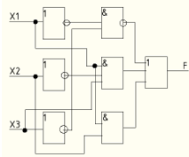
F=X1&X2&X3VX1&X3VX2&X3
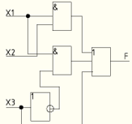
2. Переход от логической схемы к логической формуле.
Переход от логической схемы к логической формуле осуществляется по следующим правилам:
1. На схему смотрим справа налево.
2. Заменяем самый правый элемент на ту функцию, которая стоит внутри элемента (если 1, то дизъюнкция, а если &, то конъюнкция).
3. Сколько входов у элемента, столько будет «колбасок».
4. Каждая «колбаска» содержит ту функцию, которая внутри элемента.
5. Не забыть расставить инверсии.
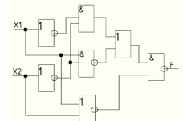
F=((X1) ̅&(X2) ̅ V(X1&(X2) ̅ ) ̅ &(X1VX2) ̅ ) ̅
Переход от логической формулы к таблице истинности.
Переход от логической формулы к таблице истинности осуществляется по следующим шагам:
1.Строится таблица истинности и заполняется для аргументов (перебор в двоичной системе счисления).
2.Затем для каждой строки таблицы истинности подставляем аргументы в формулу и считаем. При этом сначала выполняются короткие инверсии, затем конъюнкция и, если нужно, длинная инверсия. А затем дизъюнкция, если нужно длинная инверсия.
F=X1&X2V (X3) ̅
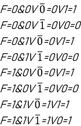
F=(X1&(X2) ̅ ) ̅VX2&(X3) ̅
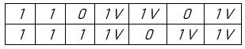
F1=(X1) ̅&(X2) ̅&(X3) ̅V(X1) ̅&(X2) ̅&X3VX1&X2&(X3) ̅VX1&X2&X3
F2=(X1) ̅&(X2) ̅&X3V(X1) ̅&X2&(X3) ̅VX1&(X2) ̅&(X3) ̅VX1&(X2) ̅&X3VX1&X2&(X3) ̅
F3=(X1) ̅&(X2) ̅&(X3) ̅V(X1) ̅&X2&X3VX1&(X2) ̅&(X3) ̅VX1&(X2) ̅&X3VX1&X2&X3
F4=(X1) ̅&(X2) ̅&(X3) ̅V(X1) ̅&(X2) ̅&X3V(X1) ̅&X2&(X3) ̅V(X1) ̅&X2&X3VX1&X2&(X3) ̅VX1&X2&X3
СКНФ:
Стремится к нулю.
СКНФ получаем по следующим шагам:
1.В таблице истинности помечаем строки, где функция равна нулю. Сколько таких строк, столько будет и сомножителей в формуле.
2.Каждый сомножитель представляет собой дизъюнкцию всех аргументов. Сомножитель заключается в скобки.
3. Так как СКНФ стремится к нулю, то избавляемся от единиц с помощью инверсии. Если в строке аргумент равен единице, то в формуле над ним ставим короткую инверсию, а если равен нулю, то не ставим.
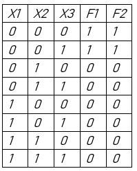
Так как таблицы истинности совпали, то функции F1 и F2 тождественны.
Сравнить две функции на тождественность.
F3=(X1) ̅&X2V(X2) ̅&X3V(X3) ̅&X1
F4=(X1) ̅&X2&(X3) ̅V(X1) ̅&X2&X3V(X2) ̅
F3=0 ̅&0V0 ̅&0V0 ̅&0=0V0V0=0
F4=0 ̅&0&0 ̅V0 ̅&0&0V0 ̅=0V0V1=1
F3=0 ̅&0V0 ̅&1V1 ̅&0=0V1V0=1
F4=0 ̅&0&1 ̅V0 ̅&0&1V0 ̅=0V0V1=1
F3=0 ̅&1V1 ̅&0V0 ̅&0=1V0V0=1
F4=0 ̅&1&1 ̅V0 ̅&1&1V1 ̅=0V1V0=1
F3=0 ̅&1V1 ̅&1V1 ̅&0=1V0V0=1
F4=1 ̅&0&0 ̅V1 ̅&0&0V0 ̅=0V0V1=1
F3=1 ̅&0V0 ̅&0V0 ̅&1=0V0V1=1
F4=1 ̅&0&0 ̅V1 ̅&0&0V0 ̅=0V0V1=1
F3=1 ̅&0V0 ̅&1V1 ̅&1=0V1V0=1
F4=1 ̅&0&1 ̅V1 ̅&0&1V0 ̅=0V0V1=1
F3=1 ̅&1V1 ̅&0V0 ̅&1=0V0V1=1
F4=1 ̅&1&0 ̅V1 ̅&1&0V1 ̅=0V0V0=0
F3=1 ̅&1V1 ̅&1V1 ̅&1=0V0V0=0
F4=1 ̅&1&1 ̅V1 ̅&1&1V1 ̅=0
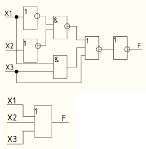
Fнач=((0 ̅&0 ̅ ) ̅V0&0V0) ̿=0
F=((0 ̅&0 ̅ ) ̅V0&1V1) ̿=1
F=((0 ̅&1 ̅ ) ̅V0&0V0) ̿=1
F=((0 ̅&1 ̅ ) ̅V0&1V1) ̿=1
F=((1 ̅&0 ̅ ) ̅V1&0V0) ̿=1
F=((1 ̅&0 ̅ ) ̅V1&1V1) ̿=1
F=((1 ̅&1 ̅ ) ̅V1&0V0) ̿=1
F=((1 ̅&1 ̅ ) ̅V1&1V1) ̿=1
Fконеч.=0V0V0=0
F=0V0V1=1
F=0V1V0=1
F=0V1V1=1
F=1V0V0=1
F=1V0V1=1
F=1V1V0=1
F=1V1V1=1
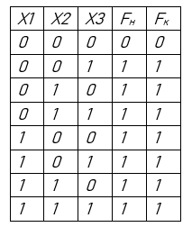
Так как таблицы истинности совпали, то минимизация верна.
F4=(X1) ̅&(X2) ̅&X3VX1&(X2) ̅&X3VX3=(X2) ̅&X3&((X1) ̅VX1)VX3=(X2) ̅&X3VX3
F=0 ̅&0 ̅&0V0&0 ̅&0V0=0
F=0 ̅&0 ̅&1V0&0 ̅&1V1=1
F=0 ̅&1 ̅&0V0&1 ̅&0V0=0
F=0 ̅&1 ̅&1V0&1 ̅&1V1=1
F=1 ̅&0 ̅&0V1&0 ̅&0V0=0
F=1 ̅&0 ̅&1V1&0 ̅&1V1=1
F=1 ̅&1 ̅&0V1&1 ̅&0V0=0
F=1 ̅&1 ̅&1V1&1 ̅&1V1=1
F=0 ̅&0V0=0
F=0 ̅&1V1=1
F=1 ̅&0V0=0
F=1 ̅&1V1=1
F=0 ̅&0V0=0
F=0 ̅&1V1=1
F=1 ̅&0V0=0
F=1 ̅&1V1=1
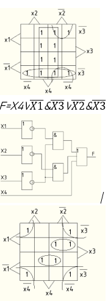
F=(X3) ̅&(X4) ̅VX1&(X2) ̅&X3V(X1) ̅&X3&X4
Тема 2.1. Теория множеств. Основные понятия теории множеств.
План:
1. Общие сведения.
2. Операции над множествами.
1. Общие сведения.
Множество – это совокупность объектов, объединенных по некоторым правилам. Объекты, из которых составлено множество, называются элементами этого множества. Элементы множества должны быть различны и отличимы друг от друга.
Множества обозначаются в основном большими буквами латинского алфавита (А, В, С). Элементы множества, в основном, обозначаются малыми буквами латинского алфавита (а, в, с) или цифрами.
Если объект Х- является элементом множества М, то говорят, что Х∈ (принадлежит) М. В противном случае, говорят, что Х М. (Х не принадлежит М).
Множества, как объекты, могут быть элементами других множеств.
Множество, элементами которого является множества, называют классом или семейством.
Множества А, является подмножеством В, если каждый элемент множества А принадлежит множеству В. (АВ) (А включается в В)
Чтобы задать множество необходимо указать, какие элементы ему принадлежат. Это можно сделать тремя способами:
1. Перечислением элементов:
М= {а1, а2, а3, … аn}
М10={0, 1, 2, 3, 4, 5, 6, 7, 8, 9}
2. Характеристическим предикатом.
3. Порождающей процедурой.
Перечислением, в основном, задаются конечные множества, а бесконечные множества задаются характеристическим предикатом или порождающей процедурой.
Множество, не содержащее элементов, называется пустым множеством.
Два множества называются равными, если они состоят из одних и тех же элементов.
2. Операции над множествами.
Операции над множествами:
1. Объединение АВ.
Объединением двух множеств А и В называется множество С, состоящее из всех элементов, принадлежащих хотя бы одному из множеств А или В.
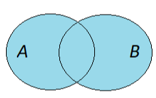
АВ:= {Х | XAVXB} Объединение похоже на дизъюнкцию.
Пример:
А:= {0,1,2,3}
В:= {2,3,4}
АВ:={0,1,2,3,4}
2. Пересечение АВ.
Пересечением двух множеств А и В называется множество С, состоящее из элементов, принадлежащих как множеству А так и множеству В.
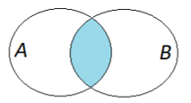
АВ:= {Х | XA&XB} Пересечение похоже на конъюнкцию.
А:= {0,1,2,3}
В:= {2,3,4}
АВ:= {2,3}
3. Разность А\В
Разностью двух множеств А и В называется множество С, состоящее из элементов, принадлежащих А, но не принадлежащих множеству В.
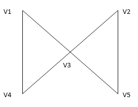
1.v1,v3,v1,v4 – маршрут, но не цепь.
2. v1,v3,v5,v2,v3,v4 – цепь, но не простая цепь.
3. v1,v4,v3,v2,v5 – простая цепь.
4. v1,v3,v5,v2,v3,v4,v1 – цикл, но не простой цикл.
5 v1,v3,v4,v1 –простой цикл
4. Частные случаи. Связность внутри графа и расстояние.
Существуют частные случаи цепей и циклов:
Гамильтонова цепь (цикл) − простая цепь (цикл), проходящая через все вершины.
Эйлерова цепь (цикл) − цепь (цикл), содержащая все ребра графа по одному разу.
Для Эйлеровой цепи и цикла существуют 2 утверждения:
Утверждение 1. Для того чтобы связный псевдограф G обладал Эйлеровым циклом, необходимо и достаточно, чтобы степени всех его вершин были четными.
Утверждение 2. Для того чтобы связный псевдограф G обладал Эйлеровой цепью, необходимо и достаточно, чтобы он имел ровно 2 вершины нечетной степени.
Длина маршрута − число ребер в маршруте.
Расстоянием между вершинами v и w (d(v,w)) называется длина кратчайшей цепи v,w.
Также говорят о связности графа – две вершины графа связаны, если существует соединяющая их цепь. Граф, в котором все вершины связаны – называются связным.
5. Матрица инцидентности.
Матрицей инцидентности называется представление графа с помощью матрицы b[i,j] , отражающей инцидентность вершин и ребер.
для неориентированного графа
Матрица инцидентности имеет размер n(G) на m(G).
Пример матрицы инцидентности:
Количество столбцов матрицы равно количеству ребер графа, количество строк матрицы – количеству вершин графа. Элемент матрицы [a,u] показывает отношение инцидентности вершины a к ребру u и равен единице (1), т.к. вершина инцидентна этому ребру. Элемент матрицы [d,w] показывает отношение инцидентности вершины d к ребру w – и равен нулю (0), т.к. вершина к этому ребру не инцидентна.
2. Постройте матрицу инцидентности.
3. Укажите степени вершин графа. Содержит ли граф Эйлеровую цепь? Эйлеровый цикл?
4. Составьте простую цепь длины 5 из вершины V2 в V5.